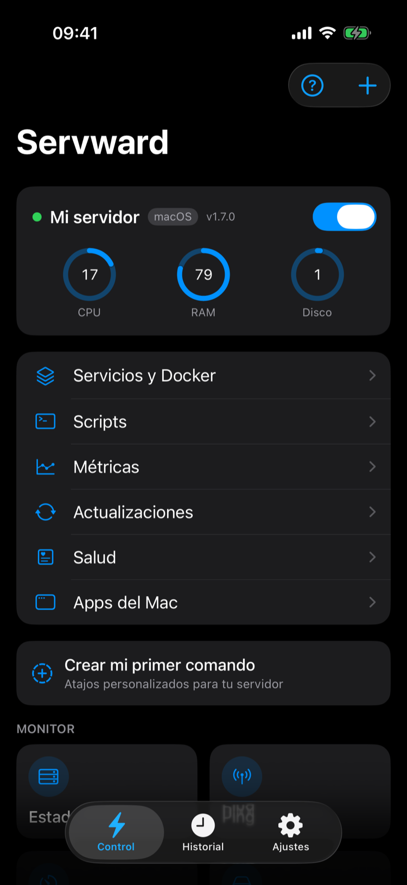
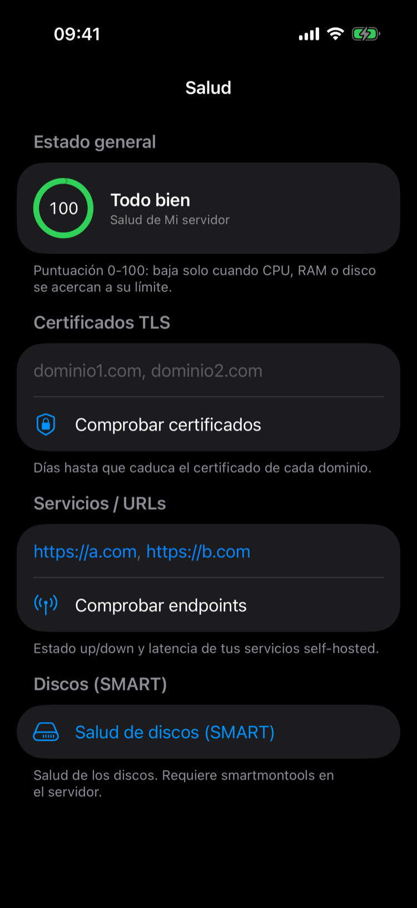
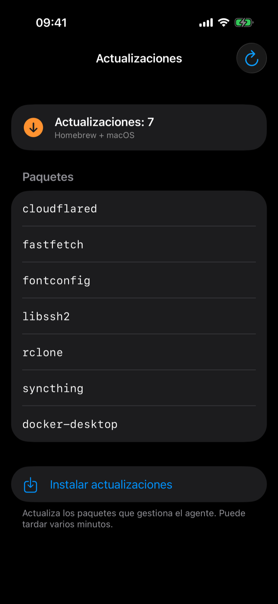
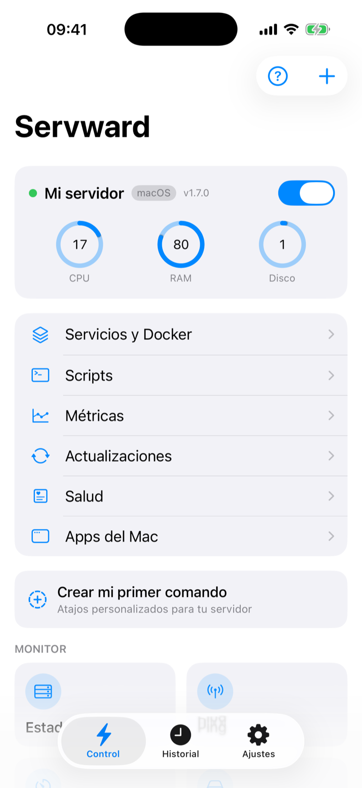

Tus servidores, en el bolsillo.
Monitoriza, controla y recibe alertas de tus servidores Mac y Linux desde el iPhone. Self-hosted, privado y sin nube.
Grabación real
La app, por dentro.
⚡ Control en vivo
CPU, RAM y disco al segundo, servicios, scripts y tus comandos — con el agente v1.7.0 en línea.
📈 Métricas con histórico
Evolución real de CPU, RAM y disco: 240 muestras, una por minuto, con media y máximos.
❤️ Salud del servidor
Puntuación 0-100, certificados TLS, endpoints y SMART de discos. Un vistazo y lo sabes todo.
⬆️ Actualizaciones del sistema
Homebrew en Mac, apt en Linux: ve los paquetes pendientes e instálalos con un toque, sin abrir el terminal.



Qué hace
Todo tu servidor, controlado desde el móvil.
Monitorización, control y alertas — sin exponer nada a la nube.
Monitorización en vivo
CPU, RAM, disco y temperatura, con histórico y gráficas.
Salud y discos (SMART)
Puntuación de salud y estado real de cada disco.
Alertas push
Te avisa cuando un servidor cae o se dispara un umbral que tú fijas.
Control remoto
Reinicia servicios, ejecuta comandos, ajusta volumen, suspende o mata procesos.
Actualiza el agente desde la appNuevo
Un toque en Ajustes. Mac y Linux, sin abrir el terminal.
Multi-servidor + QR
Añade todos tus servidores escaneando un QR. Cambia entre ellos al instante.
Widget y Live Activity
Estado en la pantalla de inicio y alertas de caída en la Isla Dinámica.
100% privado
La app habla directamente con tu servidor. Sin nube, sin cuentas, sin intermediarios.
A tu gusto
Claro u oscuro.
Se adapta al aspecto de tu iPhone — o elige el que prefieras en Ajustes.

Cómo funciona
Listo en minutos.
Instala el agente
Un comando en tu servidor, Mac o Linux. Al acabar imprime un QR: escanéalo y la app queda configurada.
Conéctalo
Por Tailscale (lo más fácil) o un túnel Cloudflare. Con Tailscale, la URL va incluida en el QR.
Controla desde el iPhone
Métricas, salud, alertas y acciones — estés donde estés.
curl -fsSL https://raw.githubusercontent.com/INVESTMENTPERPLE/servward-agent/main/install.sh | bashDudas rápidas
Preguntas frecuentes
¿Tengo que abrir puertos en el router?
¿Qué necesita mi servidor?
¿Mis datos pasan por servidores de terceros?
¿Es de pago?
¿Cuántos servidores puedo controlar?
¿Y si no me convence?
ntfyctl uninstall para y elimina los servicios, el código y la configuración del servidor.Open source
Tuyo de verdad.
El agente es de código abierto (MIT) y se auto-hospeda en tu máquina. Sin cajas negras: tú controlas todo.
★ Ver el código en GitHub